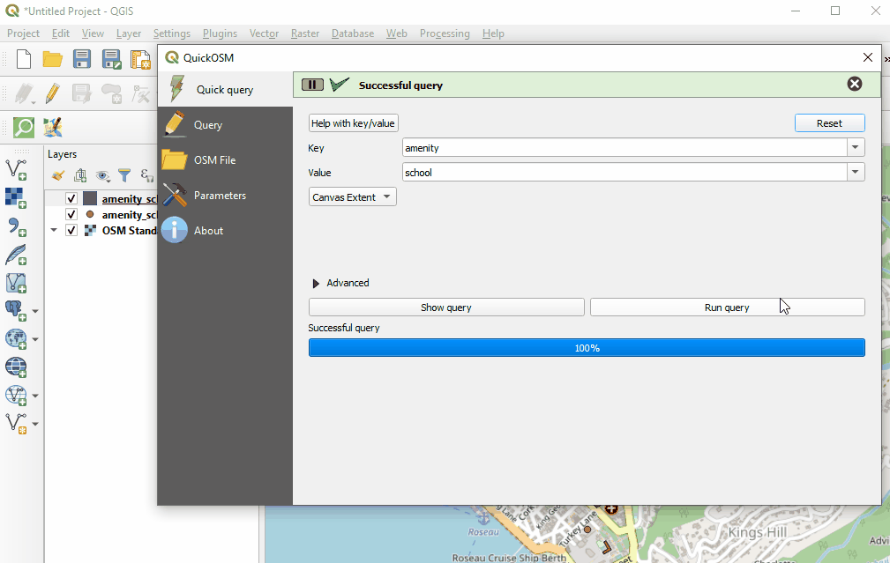

Data Export Tools
Overview
Data Export Tools allow users to download OSM data for use and analysis programs such as QGIS. The following are Data Export Tools commonly used in the HOT workflow. For more information on how to use these tools, use the training materials linked below.
Presentation: Data Export Tools Presentation - English
HOT Export Tool
HOT Export Tool allows users to download OSM data by specifying tags, area of interest, and file type.

Humanitarian Data Exchange (HDX)
Humanitarian Data Exchange (HDX) is a data platform for storing and sharing humanitarian data managed by OCHA’s Centre for Humanitarian Data.

QuickOSM
QuickOSM is a QGIS Plug-in that allows users to directly download OSM data for specific tags into QGIS.
Instructions for using and installing QGIS Plug-ins including QuickOSM can be found in here.
